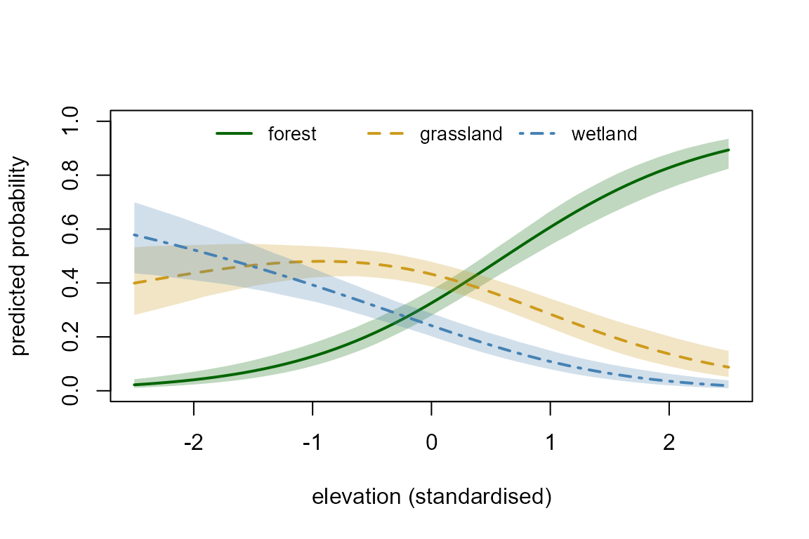
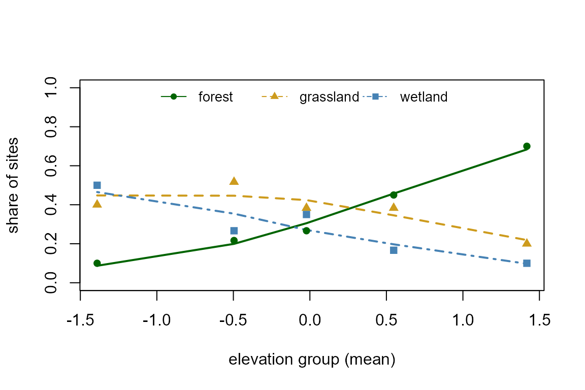
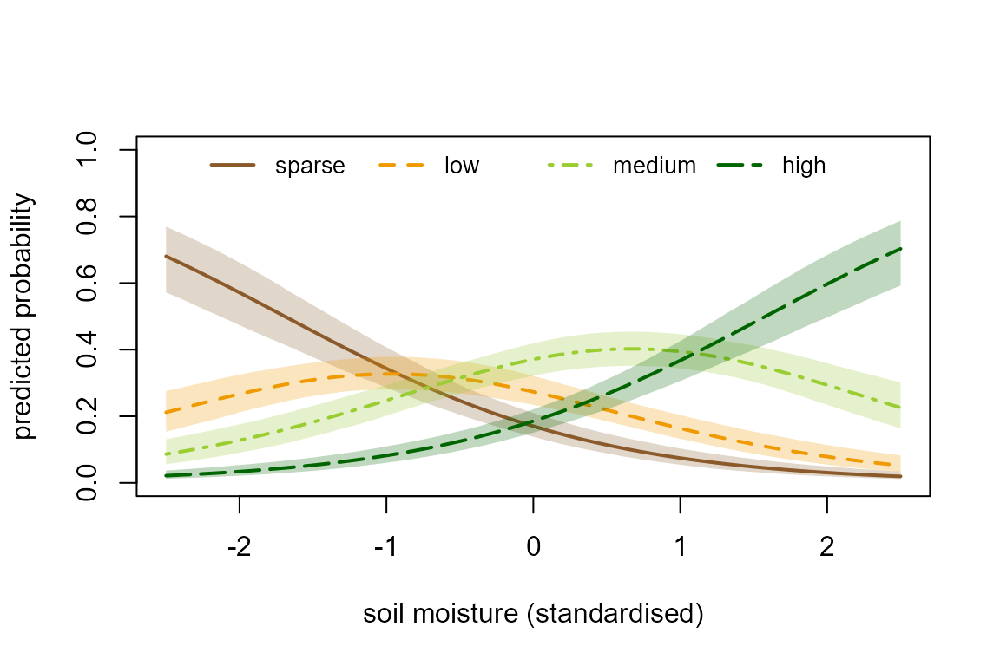
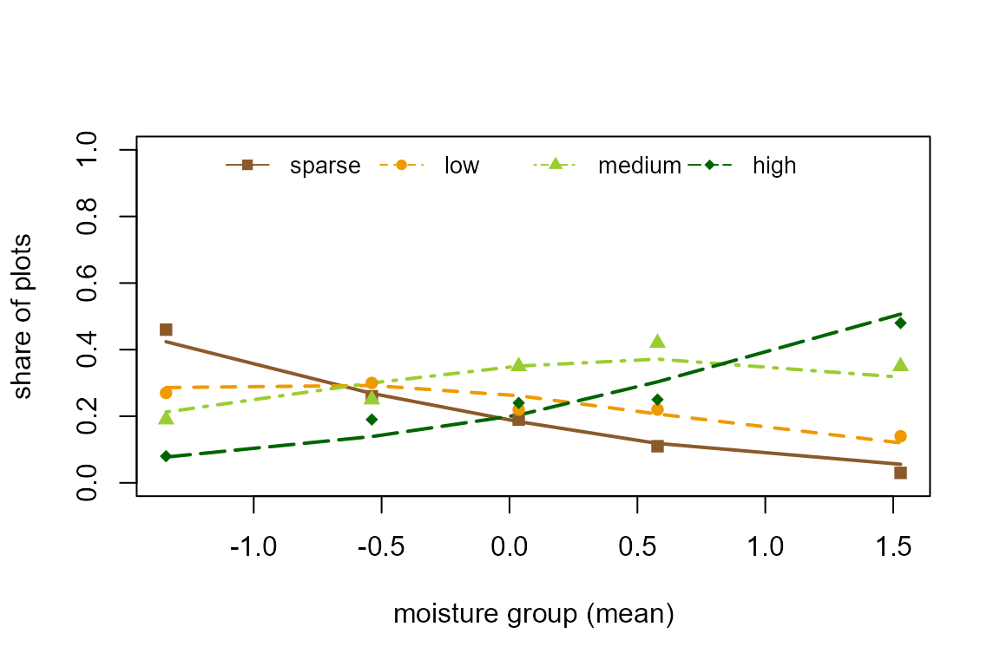

Categorical and ordinal responses
Source:vignettes/articles/categorical-responses.Rmd
categorical-responses.RmdSome responses are one of several classes: the habitat an animal was
found in, a vegetation cover class, a damage score from 1 to 4. When the
classes have no order, tulpa fits a baseline-category (multinomial)
logit model. When they are ordered, it fits a cumulative-logit
(proportional-odds) model, which uses the order and needs fewer
parameters. This article fits both to simulated data with known
coefficients, reads the coefficients and cutpoints with their intervals,
plots predicted class probabilities across a covariate, checks the
predicted class frequencies against the observed ones, and compares each
model with a simpler one. It ends with guidance on sparse classes and on
when the ordinal model is the wrong choice. Installation is covered in
Get started. The comparisons with MASS’s
polr() and nnet’s multinom() run only when
those packages are installed.
Two models for a categorical response
Index the observations by and the response classes by , with . Let denote the class of observation , its vector of covariates, and the probability of class for that observation.
The baseline-category logit takes class as the reference and gives every other class its own linear predictor,
where is the intercept of class and its vector of covariate effects, both measured against the baseline. Solving for the probabilities gives
with and . A model with covariates therefore has parameters. A coefficient is the change in the log odds of class against the baseline per unit of covariate , so its value depends on which class is the baseline; the probabilities do not. tulpa uses the last level of the response factor as the baseline.
The cumulative logit uses the order of the classes. It models the probability of falling at or below each class,
where are the cutpoints and is one vector of covariate effects shared by every class boundary. The class probabilities are the differences , with and . There is no intercept: the cutpoints carry the level. A positive moves the whole distribution toward the higher classes, and is the factor by which the odds of being above any boundary change per unit of covariate . That this factor is the same at every boundary is the proportional-odds assumption. The model has parameters.
Both fitters place a Gaussian prior with mean zero on every
coefficient (standard deviation 2.5 by default, set through
beta_prior), find the posterior mode by Newton’s method
(multinomial) or L-BFGS (ordinal), and summarise the posterior by a
Laplace approximation at that mode. The ordinal fitter works on
and the logs of the cutpoint increments, which keeps the cutpoints
ordered, and maps its draws back to cutpoints. Each fit takes a fraction
of a second on the data below.
Unordered classes: the multinomial model
Simulating habitat choice
The first dataset records in which of three habitats, forest,
grassland or wetland, each of 600 animals was found. Two standardised
covariates describe the site: elev, its elevation, and
water, its distance to open water. Wetland is the baseline.
Against wetland, forest becomes more likely with elevation and with
distance from water, and grassland mostly with distance from water.
set.seed(1)
n_h <- 600
elev <- rnorm(n_h)
water <- rnorm(n_h)
eta_f <- 0.4 + 1.2 * elev + 0.8 * water # forest vs wetland
eta_g <- 0.6 + 0.3 * elev + 1.0 * water # grassland vs wetland
P_h <- cbind(exp(eta_f), exp(eta_g), 1)
P_h <- P_h / rowSums(P_h)
hab_lev <- c("forest", "grassland", "wetland")
habitat <- apply(P_h, 1, function(p) sample(hab_lev, 1, prob = p))
dh <- data.frame(habitat = factor(habitat, levels = hab_lev),
elev = elev, water = water)
table(dh$habitat)
#>
#> forest grassland wetland
#> 208 226 166The levels are set explicitly so that wetland is last and becomes the baseline. Each class has at least 100 observations.
Fitting
tulpa() fits the model when
family = "multinomial" and the response is a factor. It
hands the fit to tulpa_multinomial(), which can also be
called directly with the same formula and data.
fm <- tulpa(habitat ~ elev + water, data = dh, family = "multinomial")
fm
#> Multinomial logit (3 classes, baseline 'wetland'), Laplace fit
#> log marginal: -570.71
#>
#> forest:(Intercept) forest:elev forest:water
#> 0.2980 1.4239 0.6869
#> grassland:(Intercept) grassland:elev grassland:water
#> 0.5822 0.3810 0.8350The coefficients are named class:term, and each one is a
contrast with wetland. summary() adds the posterior
standard deviations and 95% credible intervals.
coef(summary(fm))
#> estimate std.error 2.5 % 97.5 %
#> forest:(Intercept) 0.2980016 0.1325558 0.03819699 0.5578063
#> forest:elev 1.4238960 0.1483972 1.13304281 1.7147492
#> forest:water 0.6869401 0.1233870 0.44510608 0.9287741
#> grassland:(Intercept) 0.5822088 0.1231709 0.34079820 0.8236194
#> grassland:elev 0.3810257 0.1240176 0.13795564 0.6240957
#> grassland:water 0.8349765 0.1149962 0.60958805 1.0603650All six simulated values (intercepts 0.4 and 0.6, slopes 1.2, 0.8,
0.3 and 1.0) lie inside their intervals. The farthest from its simulated
value is the forest elevation slope, 1.42 against 1.2, about 1.5
posterior standard deviations away. confint() returns the
same bounds as a matrix.
Predicted probabilities across elevation
A coefficient against the baseline is hard to read on its own,
because raising one class’s logit lowers the probability of every other
class. The class probabilities answer the question directly.
predict() with type = "response" returns one
column per class, and se.fit = TRUE adds the posterior
standard deviation and the 2.5% and 97.5% quantiles of each probability,
computed over the fit’s 2000 posterior draws. The grid below varies
elevation and holds distance to water at its mean.
nd_h <- data.frame(elev = seq(-2.5, 2.5, length.out = 60), water = 0)
pr_h <- predict(fm, newdata = nd_h, type = "response", se.fit = TRUE)
round(head(pr_h$fit, 3), 3)
#> forest grassland wetland
#> [1,] 0.022 0.399 0.578
#> [2,] 0.025 0.406 0.569
#> [3,] 0.027 0.413 0.560Each row of pr_h$fit sums to one. The function below
draws one line and one credible band per class; it is reused for the
ordinal model later.
plot_class_probs <- function(xg, pr, xlab, cols, ltys) {
plot(range(xg), c(0, 1), type = "n", xlab = xlab,
ylab = "predicted probability")
for (k in seq_len(ncol(pr$fit))) {
polygon(c(xg, rev(xg)), c(pr$lower[, k], rev(pr$upper[, k])),
col = adjustcolor(cols[k], 0.25), border = NA)
lines(xg, pr$fit[, k], col = cols[k], lty = ltys[k], lwd = 2)
}
legend("top", colnames(pr$fit), col = cols, lty = ltys, lwd = 2,
horiz = TRUE, bty = "n", cex = 0.85)
}
cols3 <- c("darkgreen", "goldenrod3", "steelblue")
plot_class_probs(nd_h$elev, pr_h, "elevation (standardised)",
cols3, c(1, 2, 4))
Forest rises with elevation and wetland falls. Grassland first rises and then falls, although its own slope against wetland is positive: above the middle of the range forest gains faster and takes probability from it. The bands are narrowest near elevation zero, where most sites are.
Observed against predicted class frequencies
The first check compares the observed share of each class with the
mean fitted probability. fitted() returns the class
probabilities of every observation at the posterior mode.
rbind(observed = prop.table(table(dh$habitat)),
predicted = colMeans(fitted(fm)))
#> forest grassland wetland
#> observed 0.3466667 0.3766667 0.2766667
#> predicted 0.3465872 0.3765114 0.2769014A model with an intercept per class reproduces the overall shares almost by construction, so the check is more informative within ranges of a covariate. The next chunk cuts elevation into five groups of 120 sites and compares, in each group, the observed share of each class with the mean fitted probability.
bin_h <- cut(dh$elev, quantile(dh$elev, 0:5 / 5), include.lowest = TRUE)
obs_h <- prop.table(table(bin_h, dh$habitat), 1)
fit_h <- apply(fitted(fm), 2, function(p) tapply(p, bin_h, mean))
mid_h <- tapply(dh$elev, bin_h, mean)
matplot(mid_h, fit_h, type = "l", lty = c(1, 2, 4), lwd = 2, col = cols3,
ylim = c(0, 1), xlab = "elevation group (mean)",
ylab = "share of sites")
matpoints(mid_h, obs_h, pch = c(16, 17, 15), col = cols3)
legend("top", hab_lev, col = cols3, pch = c(16, 17, 15), lty = c(1, 2, 4),
horiz = TRUE, bty = "n", cex = 0.85)
The observed shares (points) lie close to the fitted ones (lines) in every group.
The formal check is posterior predictive.
posterior_predict() draws one class per observation for
each posterior draw and returns the class indices. Counting the classes
in each replicated dataset gives a predictive distribution for each
class count, and the observed count should fall inside its central 95%
interval.
yrep_h <- posterior_predict(fm, ndraws = 1000, seed = 2)
cnt_h <- t(apply(yrep_h, 1, tabulate, nbins = 3))
colnames(cnt_h) <- hab_lev
rbind(observed = table(dh$habitat),
apply(cnt_h, 2, quantile, c(0.025, 0.975)))
#> forest grassland wetland
#> observed 208.000 226.000 166
#> 2.5% 179.975 194.975 140
#> 97.5% 235.000 255.000 195Each observed count lies inside its interval. The same count can be
taken within each elevation group by subsetting the columns of
yrep_h.
Comparison with nnet
nnet’s multinom() fits the same model by maximum
likelihood and takes the first level as its baseline. Reordering the
levels so wetland comes first puts both fits on the same baseline.
dh_nnet <- transform(dh, habitat = relevel(habitat, ref = "wetland"))
fn <- nnet::multinom(habitat ~ elev + water, data = dh_nnet, trace = FALSE)
round(rbind(nnet = as.vector(t(coef(fn))),
tulpa = unname(coef(fm))), 3)
#> [,1] [,2] [,3] [,4] [,5] [,6]
#> nnet 0.301 1.431 0.691 0.587 0.386 0.839
#> tulpa 0.298 1.424 0.687 0.582 0.381 0.835The two rows hold the same six coefficients in the same order (forest intercept, elevation, water, then grassland). They differ by less than 0.01, and every tulpa estimate is the smaller in absolute value, as expected from the prior with standard deviation 2.5, which pulls the estimates toward zero.
Ordered classes: the cumulative logit model
Simulating cover classes
The second dataset gives the cover of a plant species on 500 plots in
four ordered classes, sparse, low, medium and high. Cover rises with
soil moisture (moist, slope 0.9) and falls with grazing
intensity (graze, slope -0.7). The three cutpoints are
-1.5, 0 and 1.6.
set.seed(3)
n_c <- 500
moist <- rnorm(n_c)
graze <- rnorm(n_c)
cuts <- c(-1.5, 0, 1.6)
eta_c <- 0.9 * moist - 0.7 * graze
F_c <- plogis(outer(-eta_c, cuts, "+")) # P(y <= k), one column per k
P_c <- cbind(F_c, 1) - cbind(0, F_c)
cov_lev <- c("sparse", "low", "medium", "high")
cover <- apply(P_c, 1, function(p) sample(cov_lev, 1, prob = p))
dc <- data.frame(cover = factor(cover, levels = cov_lev, ordered = TRUE),
moist = moist, graze = graze)
table(dc$cover)
#>
#> sparse low medium high
#> 105 115 156 124The response is an ordered factor, and the order of its levels is the order the model uses.
Fitting, coefficients and cutpoints
family = "ordinal" routes the fit to
tulpa_ordinal(). An intercept in the formula is dropped,
since the cutpoints carry the level.
fo <- tulpa(cover ~ moist + graze, data = dc, family = "ordinal")
fo
#> Ordinal cumulative logit (4 ordered levels), Laplace fit
#> log marginal: -613.54
#>
#> Coefficients:
#> moist graze
#> 0.9346 -0.6228
#>
#> Cutpoints:
#> sparse|low low|medium medium|high
#> -1.5832 -0.2210 1.4854coef() returns the covariate effects only, as
MASS::polr() does. The cutpoints are named after the two
classes they separate (sparse|low), and
summary() and confint() report them together
with the effects.
coef(summary(fo))
#> estimate std.error 2.5 % 97.5 %
#> moist 0.9345598 0.09313001 0.7489602 1.1146379
#> graze -0.6227796 0.09287668 -0.8014254 -0.4398355
#> sparse|low -1.5831704 0.12627093 -1.8329954 -1.3208745
#> low|medium -0.2210282 0.10199262 -0.4187473 -0.0121814
#> medium|high 1.4853853 0.11882095 1.2602770 1.7296248The moisture slope, 0.93 against a simulated 0.9, and the grazing
slope, -0.62 against -0.7, lie within one posterior standard deviation
of their simulated values. The outer cutpoints do too. The middle one,
-0.22 against a simulated 0, is about two standard deviations away and
its interval just excludes zero; MASS::polr() gives the
same value on these data (below), so the offset is a property of this
sample. The cutpoint intervals come from the draws mapped back to
cutpoint space, so they need not be symmetric about the estimate.
The slopes are read on the odds scale through exp(): one
standard deviation more moisture multiplies the odds of being above any
class boundary by the factor below, and the interval transforms with
it.
Predicted probabilities across moisture
The ordinal model’s probabilities come out of the same
predict() call. The grid varies moisture and holds grazing
at its mean.
nd_c <- data.frame(moist = seq(-2.5, 2.5, length.out = 60), graze = 0)
pr_c <- predict(fo, newdata = nd_c, type = "response", se.fit = TRUE)
cols4 <- c("tan4", "orange2", "olivedrab3", "darkgreen")
plot_class_probs(nd_c$moist, pr_c, "soil moisture (standardised)",
cols4, c(1, 2, 4, 5))
Under proportional odds the classes take turns: sparse falls, high rises, and each middle class peaks between the two classes on either side of it. The model can produce no other pattern from a single covariate, which is the point of the guidance on proportional odds below.
Observed against predicted class frequencies
The check is the same as for the multinomial model, by groups of moisture and by posterior predictive counts.
bin_c <- cut(dc$moist, quantile(dc$moist, 0:5 / 5), include.lowest = TRUE)
obs_c <- prop.table(table(bin_c, dc$cover), 1)
fit_c <- apply(fitted(fo), 2, function(p) tapply(p, bin_c, mean))
mid_c <- tapply(dc$moist, bin_c, mean)
matplot(mid_c, fit_c, type = "l", lty = c(1, 2, 4, 5), lwd = 2, col = cols4,
ylim = c(0, 1), xlab = "moisture group (mean)",
ylab = "share of plots")
matpoints(mid_c, obs_c, pch = 15:18, col = cols4)
legend("top", cov_lev, col = cols4, pch = 15:18, lty = c(1, 2, 4, 5),
horiz = TRUE, bty = "n", cex = 0.85)
yrep_c <- posterior_predict(fo, ndraws = 1000, seed = 4)
cnt_c <- t(apply(yrep_c, 1, tabulate, nbins = 4))
colnames(cnt_c) <- cov_lev
rbind(observed = table(dc$cover),
apply(cnt_c, 2, quantile, c(0.025, 0.975)))
#> sparse low medium high
#> observed 105 115 156 124
#> 2.5% 84 91 126 102
#> 97.5% 130 144 183 148Comparison with MASS
MASS::polr() fits the same proportional-odds model by
maximum likelihood, with the same sign convention,
, and the same names for
the cutpoints.
A probit link
family = "ordinal_probit" replaces the logistic
distribution function by the standard normal one. The coefficients are
then on the scale of a latent normal variable with unit variance, and
they come out smaller than the logit ones by about the ratio of the two
distributions’ standard deviations,
.
fo_pr <- tulpa(cover ~ moist + graze, data = dc, family = "ordinal_probit")
round(rbind(logit = coef(fo), probit = coef(fo_pr),
ratio = coef(fo) / coef(fo_pr)), 3)
#> moist graze
#> logit 0.935 -0.623
#> probit 0.548 -0.354
#> ratio 1.705 1.758
max(abs(fitted(fo) - fitted(fo_pr)))
#> [1] 0.02237403The ratios are 1.7 and 1.8. The last line is the largest difference between the two fits’ class probabilities over all plots and classes, 0.022. The data were simulated with the logit link, and the probit fit gives class probabilities within that distance of the logit ones.
Comparing models
Dropping a covariate
Both fitters report a Laplace approximation to the log marginal
likelihood, which logLik() returns and
compare_models() ranks with
criterion = "loglik". They also store pointwise
log-likelihoods at every posterior draw, so
criterion = "waic" works too. The first comparison drops
grazing from the ordinal model.
fo_m <- tulpa(cover ~ moist, data = dc, family = "ordinal")
compare_models(full = fo, moisture_only = fo_m, criterion = "waic")
#> model elpd se_elpd p_eff ic delta se_diff
#> 1 full -610.6506 11.93054 5.076507 1221.301 0.00000 NA
#> 2 moisture_only -633.4378 10.18314 4.088971 1266.876 -22.78723 7.062585
#> weight
#> 1 1.000000e+00
#> 2 1.269501e-10
compare_models(full = fo, moisture_only = fo_m, criterion = "loglik")
#> model n_params logLik quantity conditioned_on
#> 1 full 5 -613.5388 log_evidence
#> 2 moisture_only 4 -635.7879 log_evidenceIn the WAIC table elpd is the estimated expected log
predictive density, delta its difference from the best
model and se_diff the standard error of that difference.
The full model ranks first on both criteria: by 22.8 units of elpd,
about three standard errors of the difference, and by 22.2 on the log
marginal likelihood (-613.5 against -635.8).
Ordinal against multinomial on the same ordered data
The multinomial model can be fitted to ordered data too: it ignores the order and gives every class its own intercept and slopes, 9 parameters here against the ordinal model’s 5. On data that satisfy proportional odds, the extra parameters buy nothing.
dc_nom <- transform(dc, cover = factor(cover, ordered = FALSE))
fm_c <- tulpa(cover ~ moist + graze, data = dc_nom, family = "multinomial")
compare_models(ordinal = fo, multinomial = fm_c, criterion = "waic")
#> model elpd se_elpd p_eff ic delta se_diff
#> 1 ordinal -610.6506 11.93054 5.076507 1221.301 0.000000 NA
#> 2 multinomial -614.4014 12.23348 8.989744 1228.803 -3.750824 2.698002
#> weight
#> 1 0.97704113
#> 2 0.02295887WAIC favours the ordinal model by 3.8 units of elpd, about 1.4
standard errors of the difference: the multinomial model predicts no
better and spends 9 effective parameters (p_eff) where the
ordinal model spends 5. The log marginal likelihood is less suited to
this comparison: the two models put different priors on different
parameters (a ridge on the class intercepts in one, on the log cutpoint
increments in the other), and the evidence depends on those priors
directly.
When proportional odds fails
The ordinal model shifts the whole distribution in one direction per
covariate. A covariate that makes the extreme classes more likely at one
end of its range and the middle class at the other has no such
direction. The next dataset has three ordered classes, and
x lowers the logits of both low and
high against mid by the same amount.
set.seed(5)
n_x <- 500
xx <- rnorm(n_x)
eta_x <- -0.3 - 1.2 * xx # low vs mid, and high vs mid
P_x <- cbind(exp(eta_x), 1, exp(eta_x))
P_x <- P_x / rowSums(P_x)
yx <- apply(P_x, 1, function(p) sample(c("low", "mid", "high"), 1, prob = p))
dx <- data.frame(y = factor(yx, levels = c("low", "mid", "high")), x = xx)
fo_x <- tulpa(y ~ x, data = transform(dx, y = as.ordered(y)),
family = "ordinal")
fm_x <- tulpa(y ~ x, data = dx, family = "multinomial")
coef(summary(fo_x))["x", ]
#> estimate std.error 2.5 % 97.5 %
#> x -0.06309549 0.08264313 -0.2272535 0.1035795
compare_models(ordinal = fo_x, multinomial = fm_x, criterion = "waic")
#> model elpd se_elpd p_eff ic delta se_diff
#> 2 multinomial -490.5161 10.639146 4.050879 981.0322 0.0000 NA
#> 1 ordinal -542.6438 4.536084 3.159192 1085.2876 -52.1277 9.38217
#> weight
#> 2 1.000000e+00
#> 1 2.297363e-23The ordinal slope on x is -0.06 with an interval from
-0.23 to 0.10, although x changes the class probabilities
strongly, and WAIC prefers the multinomial model by 52 units of elpd,
about 5.6 standard errors of the difference. An ordinal slope near zero
is therefore not evidence that a covariate has no effect; refit the
multinomial model and compare before reading it that way.
Sparse and empty classes
A class with few observations makes its own parameters uncertain. In the ordinal model that is the cutpoint next to the rare class; in the multinomial model it is the whole coefficient vector of that class. The cover data below are simulated as before, but with a top cutpoint of 3.5, so that the high class is rare.
set.seed(7)
cuts_s <- c(-1.5, 0, 3.5)
F_s <- plogis(outer(-eta_c, cuts_s, "+"))
P_s <- cbind(F_s, 1) - cbind(0, F_s)
cover_s <- apply(P_s, 1, function(p) sample(cov_lev, 1, prob = p))
dc_s <- transform(dc, cover = factor(cover_s, levels = cov_lev,
ordered = TRUE))
table(dc_s$cover)
#>
#> sparse low medium high
#> 122 131 218 29
fo_s <- tulpa(cover ~ moist + graze, data = dc_s, family = "ordinal")
coef(summary(fo_s))[, c("estimate", "std.error")]
#> estimate std.error
#> moist 0.9972393 0.09856703
#> graze -0.7725010 0.09761981
#> sparse|low -1.3973716 0.12148109
#> low|medium 0.1092160 0.10370476
#> medium|high 3.6107364 0.22869164The high class now has 29 plots. The slopes keep about the precision they had on the first cover data (posterior standard deviations near 0.10 against 0.09), since every observation informs them. The standard deviation of the top cutpoint, 0.23, is about twice that of the other two.
A class with no observations at all has no information about its parameters, and both fitters refuse it by name. This happens most often after subsetting, when a factor keeps a level none of the remaining rows have. The subset below keeps the plots below high cover, for an analysis of the lower classes alone.
dc_low <- subset(dc_s, cover != "high")
table(dc_low$cover)
#>
#> sparse low medium high
#> 122 131 218 0
tulpa(cover ~ moist + graze, data = dc_low, family = "ordinal")
#> Error:
#> ! tulpa_ordinal(): response level(s) 'high' have no observations, so their class parameters are not identified. Drop them with droplevels() or merge them into a neighbouring level.The message names two remedies, dropping the level or merging it into
a neighbouring one. Here the high class was removed on purpose, so
droplevels() is the fix, and the model is fitted on the
three classes that remain, with two cutpoints.
fo_low <- tulpa(cover ~ moist + graze, data = droplevels(dc_low),
family = "ordinal")
fo_low$cutpoints
#> sparse|low low|medium
#> -1.3391310 0.1795565The prior matters most where a class is sparse. Its standard
deviation is set with
beta_prior = list(mean = 0, sd = ...); the cutpoint prior
of the ordinal model with cut_prior_sd in
tulpa_ordinal(). On the multinomial habitat data, keeping
only 12 wetland sites makes wetland the sparse baseline. The fits below
compare the default prior with a wider and a narrower one.
set.seed(7)
keep <- dh$habitat != "wetland" |
seq_len(n_h) %in% sample(which(dh$habitat == "wetland"), 12)
dh_s <- dh[keep, ]
fits_s <- lapply(c(1, 2.5, 10), function(s) {
tulpa(habitat ~ elev + water, data = dh_s, family = "multinomial",
beta_prior = list(mean = 0, sd = s))
})
round(sapply(fits_s, coef), 2)
#> [,1] [,2] [,3]
#> forest:(Intercept) 2.38 2.85 3.01
#> forest:elev 1.26 1.53 1.62
#> forest:water 0.42 0.61 0.68
#> grassland:(Intercept) 2.66 3.14 3.29
#> grassland:elev 0.21 0.47 0.56
#> grassland:water 0.59 0.77 0.84The columns are prior standard deviations 1, 2.5 and 10. With 12 sites of one class every contrast with it depends on the prior: the forest intercept moves from 2.38 to 3.01 between the narrowest and the widest prior, and the forest elevation slope from 1.26 to 1.62 (simulated 1.2). On the full data the default prior and nnet’s unpenalised fit differed by less than 0.01.
Practical guidance
| Response | Model | Parameters with covariates and classes |
|---|---|---|
| Unordered classes | family = "multinomial" |
|
| Ordered classes, effects in one direction | family = "ordinal" |
|
| Ordered classes, a covariate favouring the middle or both ends | family = "multinomial" |
|
| Two classes | family = "binomial" |
- Use the ordinal model when the order is real and the effects point one way. It estimates one slope per covariate instead of : on the cover data it needed 5 parameters where the multinomial model needed 9, and WAIC ranked it first by 3.8 units of elpd.
- Do not use the ordinal model when a covariate favours the middle
class or both extremes. On the data simulated that way above, the
ordinal slope was -0.06 with an interval covering zero, and WAIC
preferred the multinomial model by 52 units of elpd. Fit both and
compare with
criterion = "waic"whenever the direction of an effect is in doubt. - Count observations per class, not only in total. With 29 of 500 plots in the top cover class, the top cutpoint had a posterior standard deviation of 0.23, about twice that of the other cutpoints, while the slopes kept their precision. In the multinomial model a sparse class carries weakly informed parameters, and with 12 wetland sites out of 446 the forest intercept moved from 2.38 to 3.01 between prior standard deviations of 1 and 10. At that size, report the prior with the estimates.
- Choose the baseline of the multinomial model on purpose. The
coefficients are contrasts with the last level, and a well-observed
class makes them easier to estimate. Reorder the levels with
factor(..., levels = )before fitting. Without a prior the predicted probabilities would not depend on this choice; the prior on the contrasts makes them depend on it slightly. - Merge or drop empty classes before fitting. Both fitters refuse a level with no observations, and the message names the level.
- Compare the two model types by WAIC, and models of one type by either criterion. The log marginal likelihood depends on the priors, which differ between the two types.
What is supported
Both families are fixed-effect models. tulpa() refuses
random effects, smoothers and spatial or temporal fields for a
categorical response, and it fits by the Laplace driver only, so
mode accepts "auto", "structured"
or "laplace".
dc_g <- transform(dc, site = rep(1:25, each = 20))
tulpa(cover ~ moist + (1 | site), data = dc_g, family = "ordinal")
#> Error:
#> ! family = 'ordinal' supports fixed-effect models only through tulpa(); random effects, smoothers, and spatial / temporal structure are not wired for categorical responses yet.See also
- Get started: the other response families and the basic loop of fitting, checking and predicting.
- Model comparison: the marginal likelihood, WAIC and LOO in more detail.
-
Priors: the fixed-effect prior that
beta_priorsets. -
?tulpa_multinomial,?tulpa_ordinaland?categorical_accessors: the fitters and thefitted(),residuals(),predict()andposterior_predict()methods for their fits.